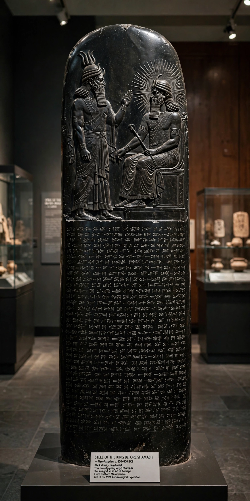

[Image placeholder: The stele of the Code of Hammurabi, showing the king before Shamash]| Reign | c. 1792–1750 BC (middle chronology) |
|---|---|
| Empire | First Babylonian Empire |
| Capital | Babylon |
| Known for | Code of Hammurabi — one of the earliest surviving law codes |
| Dynasty | First Dynasty of Babylon (Amorite) |
**Hammurabi** was the sixth king of the First Babylonian Dynasty of the Amorite tribe, reigning from c. 1792 to c. 1750 BC. Beginning with a city-state of modest size, he conquered Larsa, Eshnunna, Mari and the other kingdoms of Mesopotamia, uniting almost the whole region under Babylon for the first time and becoming the region's dominant figure.
He is best known for the Code of Hammurabi, a stele of black diorite inscribed with nearly 300 laws — among the oldest deciphered writings of significant length in the world. Its prologue presents the king as chosen by the gods (the stele's relief shows him before the sun-god Shamash), and its penalties follow retributive principles ('an eye for an eye') graded by social class. The stele, rediscovered at Susa in 1901, stands in the Louvre. Hammurabi also reorganised administration, taxation, irrigation and temples, and his letters give an unusually detailed picture of Bronze Age government.
His son Samsu-iluna could not hold the empire together against revolts and Kassite pressure; Babylon's first empire shrank, though Babylon remained a great cultural and religious capital for over a thousand years.